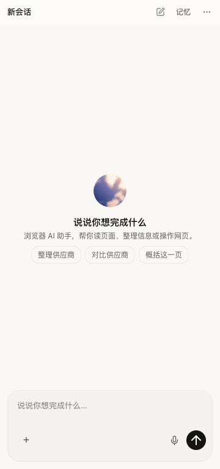

<!doctype html>
<html lang="zh-CN"><meta charset="utf-8"><meta name="viewport" content="width=device-width,initial-scale=1">
<title>这轮接续 · 现在到哪了</title>
<style>
:root{font:14px/1.6 -apple-system,BlinkMacSystemFont,"PingFang SC",sans-serif;color:#22211f;background:#eeede7}*{box-sizing:border-box}body{margin:0;padding:24px}main{max-width:900px;margin:auto}h1{font-size:20px;font-weight:550;margin:0}header p{color:#77746e;margin:6px 0 22px}nav{display:flex;gap:6px;flex-wrap:wrap;margin-bottom:16px}button{font:inherit;cursor:pointer;border:1px solid #25231e14;border-radius:22px;background:transparent;padding:8px 16px;color:#77746e}button[aria-pressed=true]{background:#fff;color:#25231e}section{background:#faf9f5;border:1px solid #25231e12;border-radius:24px;padding:28px;display:flex;align-items:center;gap:32px}.screen{width:360px;flex-shrink:0;border:1px solid #25231e18;border-radius:14px;overflow:hidden;background:white;box-shadow:0 10px 30px #25231e08}img,video{display:block;width:100%;max-height:65vh;object-fit:contain}[hidden]{display:none!important}.copy{max-width:350px}.state{display:inline-block;border-radius:20px;background:#e9eee6;color:#556750;font-size:12px;padding:4px 10px}.state.pending{background:#eee9df;color:#806847}h2{font-weight:500;font-size:25px;line-height:1.4;margin:18px 0 14px}.copy p{color:#65625a}.copy .next{color:#33322e;margin-top:22px}.play{background:#25231e;color:#fff;border:0;margin-top:8px}footer{font-size:12px;color:#868279;margin-top:18px}@media(max-width:760px){body{padding:14px}section{flex-direction:column;padding:18px;gap:16px}.screen{width:330px;max-width:100%}.copy{max-width:100%;align-self:stretch}h2{font-size:22px}}
</style>
<main><header><h1>这轮接续，现在到哪了</h1><p>已做好两块，语音还在修。你现在不用操作。</p></header>
<nav aria-label="查看进展"><button data-case="welcome" aria-pressed="true">欢迎页 · 已做好</button><button data-case="check" aria-pressed="false">网页保护与核对 · 已做好</button><button data-case="voice" aria-pressed="false">免按键语音 · 还在修</button></nav>
<section><div class="screen"><video hidden controls playsinline muted preload="metadata"></video></div><div class="copy"><span class="state"></span><h2></h2><p class="detail"></p><p class="next"></p><button class="play" hidden>播放实际录像（无声音）</button></div></section>
<footer>画面来自实际运行，不是模拟效果。新版本尚未装进你日常使用的扩展。</footer></main>
<script>
const scenes={welcome:{state:'已做好 · 等收尾后更新',title:'打开网页，就有合适的起点。',detail:'供应商页可以整理、对比；招聘页可以比较职位；文章页可以翻译。点击只填草稿，不替你发送。',next:'按你认可的“不调模型”方向做。',image:'welcome.png'},check:{state:'已做好 · 等收尾后更新',title:'没做成的事，不再悄悄略过。',detail:'按钮变了就不乱点。前一步条件没满足，就不继续。回答说有 830 条，文件只有 658 条，也会指出来。',next:'这段录像是实际网页操作后的结果核对。',video:'panel.mp4'},voice:{state:'还在修 · 不能交付',title:'语音还会接不上话。',detail:'你选的方式是：闲聊直接聊，做事交助手。部分路径已跑通，但刚才实际使用时，说完后没有接上回答。',next:'我先修好，再给你看能正常使用的录像。你不用排错。',video:'voice-not-ready.mp4',seek:12}};
const image=document.querySelector('img'),video=document.querySelector('video'),play=document.querySelector('.play');
function show(key){const s=scenes[key];video.pause();document.querySelectorAll('nav button').forEach(b=>b.setAttribute('aria-pressed',String(b.dataset.case===key)));const state=document.querySelector('.state');state.textContent=s.state;state.classList.toggle('pending',key==='voice');document.querySelector('h2').textContent=s.title;document.querySelector('.detail').textContent=s.detail;document.querySelector('.next').textContent=s.next;image.hidden=!!s.video;video.hidden=!s.video;play.hidden=!s.video;if(s.image)image.src='media/'+s.image;if(s.video){video.src='media/'+s.video;video.onloadedmetadata=()=>{video.currentTime=s.seek??0}}}
document.querySelectorAll('nav button').forEach(b=>b.onclick=()=>show(b.dataset.case));play.onclick=()=>video.play().catch(()=>{});show('welcome');
</script></html>
